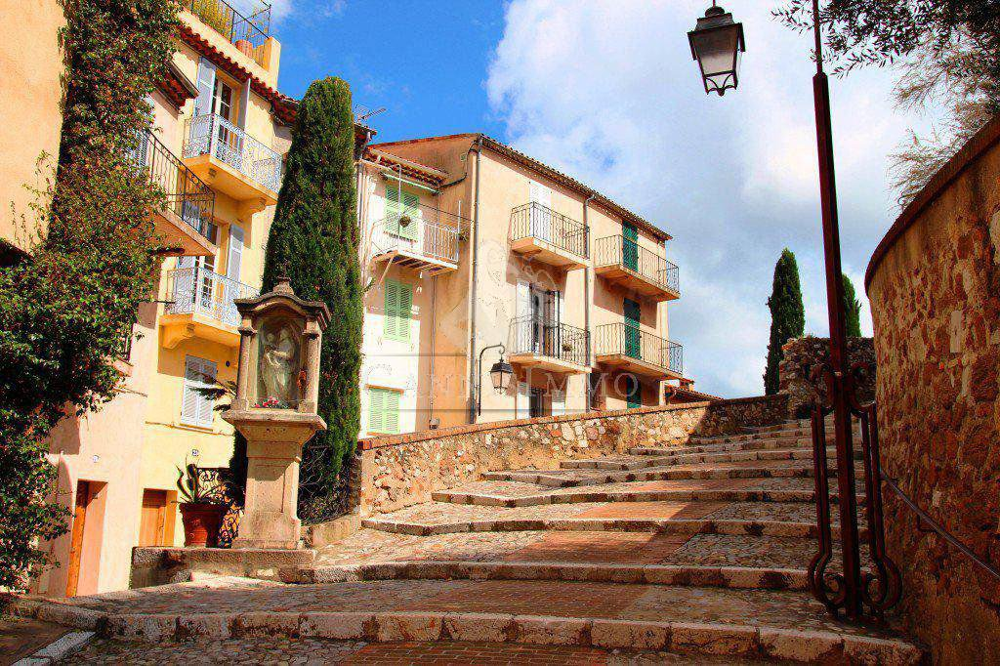
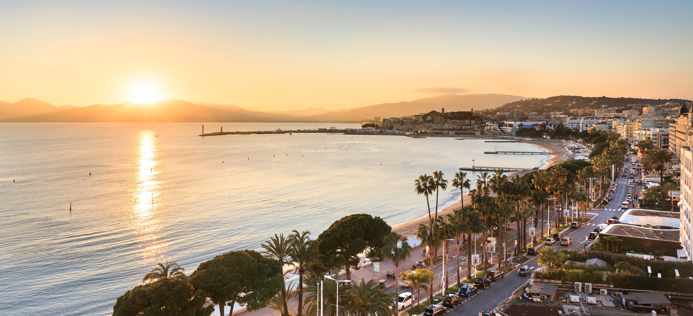

I'm french and I'm studying at ESSEC Business School. I like movies, cooking and lifestyle. I also love travelling around the world, discovering other cultures and meeting new people! But most importanly, I am a spontaneous, funny and curious person.
View my resumeI like cinema a lot, especially French cinema like the film La Belle Epoque. I also love the must-see movie Grease! Cinema allows us to escape from our daily life into a new world, it can be a similar world or even a fantastic one, it also allows us to learn from life. This is a good therapy!
When I have spare time, I love to cook. For me cooking is vital but also a fun activity to do alone or with my family! It's always nice to eat a good meal. Please find below one my must-have recipes!
I love to travel, last summer I went to Cannes, a city full of resources and beautiful landscapes! It's really interesting to travel to discover a lot of things and it allows you to take a break from work or social networks.
 I did 10 years of modern jazz dance and one year of hip-hop. At the end of each year, I participated in a show in front of my city. This sport allows you to develop your creativity and your team spirit. I recommend it!